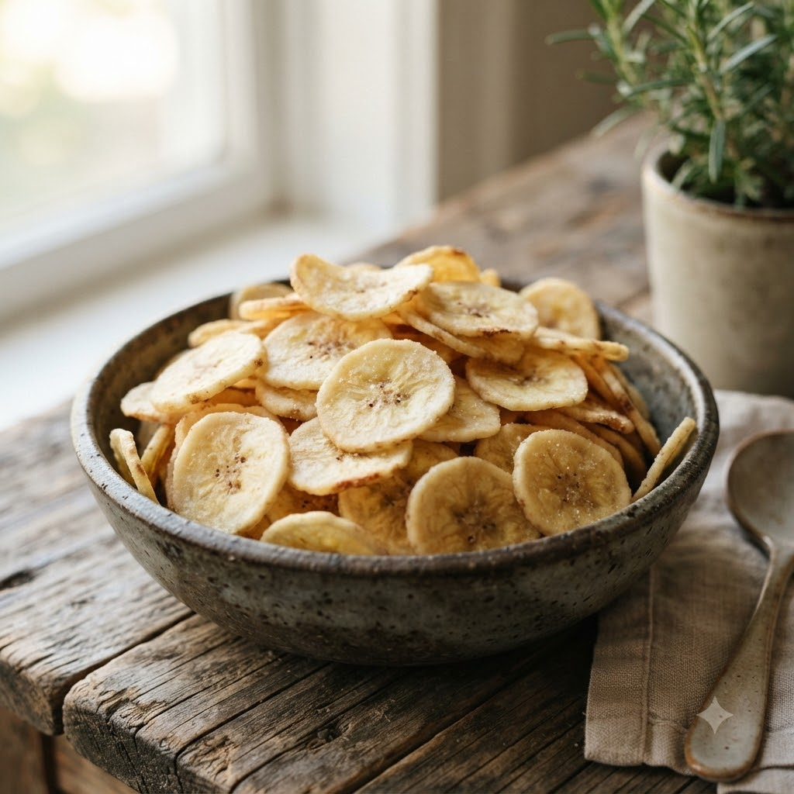

Crispy Banana Chips

Crispy Banana Chips
Airfryer – Fry 170°C 16 min — Serves 4
🔥 Airfryer🍽 Serves 4
Prep ahead: Soak sliced raw bananas in salted turmeric water for 10 minutes to prevent browning.
Ingredients
- 2 raw (green) bananas, thinly sliced
- 1/2 tsp turmeric (haldi)
- 1 tsp salt
- 1 tbsp oil
Method
1Preheat: Preheat the Airfryer to 170°C for 4 minutes before adding the food to the basket.
2Soak banana slices in water with turmeric and salt for 10 minutes; drain and pat dry.
3Toss with oil.
4Arrange in a single layer in the basket.
5Air-fry at 170°C for 16 minutes, shaking every 5 minutes, until crisp and lightly golden.